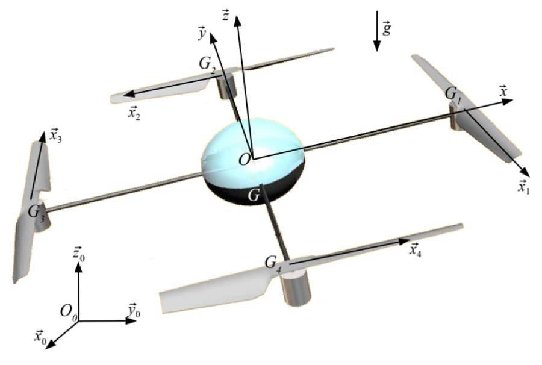
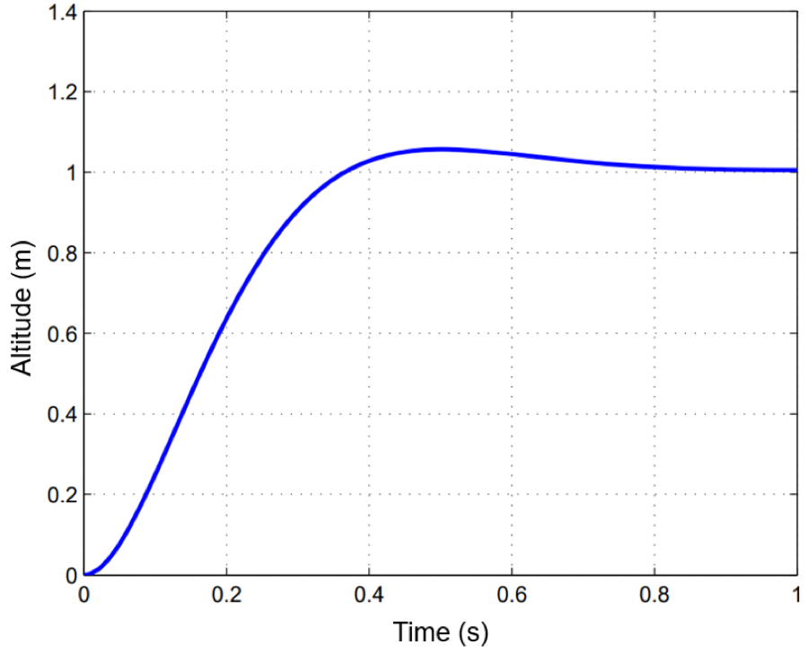
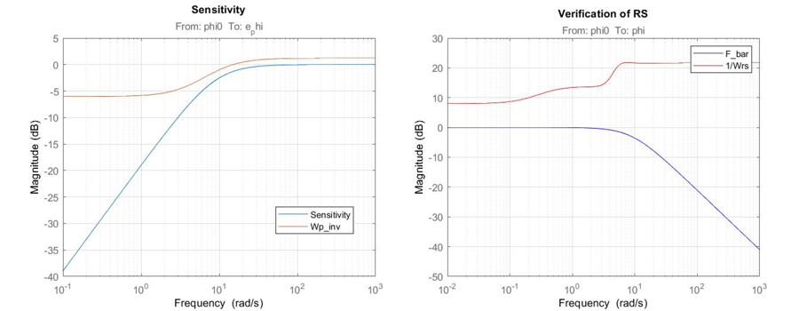
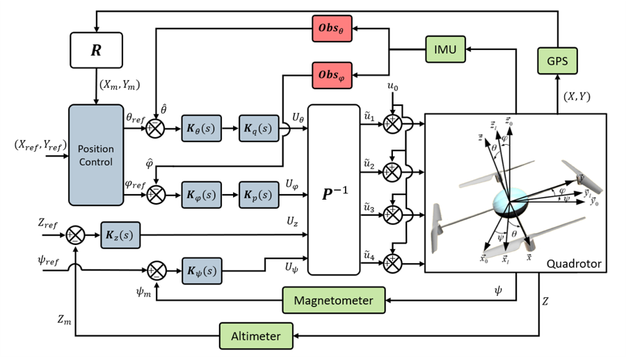

Course project · Politecnico di Milano
Modelling and robust attitude control of a quadrotor
Model
The model couples the rigid-body dynamics to the electro-mechanical equations of the four motors, which is what later lets the controller be designed against real actuator limits rather than an idealised torque input. Three frames: an inertial ground frame \(R_0\), a body frame \(R\) with its axes along the arms, and a frame \(R_i\) per propeller.

Each motor is reduced to a first-order electro-mechanical relation:
\[ J_r\dot{\tilde{\omega}}_i = \left(\tilde{u}_i - K_m\tilde{\omega}_i\right)\frac{K_m}{R_m} - 2b\bar{\omega}\tilde{\omega}_i \]with \(\tilde{u}_i\) the motor voltage, \(R_m\) the internal resistance and \(K_m\) the torque constant. The dynamics then split into a vertical subsystem and lateral / longitudinal subsystems that can be controlled separately.
Altitude loop
Altitude is driven by the summed motor command \(u_z = \sum_{i=1}^{4}\tilde{u}_i\) and measured by a downward-facing sonar. Because the four motors act together, the vertical channel reduces to a single-input problem.

Attitude loop and robustness
Roll and pitch are stabilised from IMU measurements alone, using the differential command \(u_\varphi = \tilde{u}_2 - \tilde{u}_4\). Roll and pitch are symmetric, so designing one gives the other.
The interesting part is that the controller is not designed against nominal parameters.
An uncertain model is built in MATLAB's Robust Control Toolbox with ±3σ
ranges on every parameter treated as deterministic bounds, and the controller is
synthesised with hinfstruct against two weighting functions — one for
performance, one for robust stability. The stronger robust performance criterion
is then checked on top.

Robustness is then verified statistically rather than only at the bounds: Monte Carlo simulation over the uncertain parameters gives distributions of gain and phase margin, settling time and overshoot. A state observer reconstructs the states the IMU does not measure directly.
Putting it together

The four channel commands map to the four motors through a fixed allocation matrix:
\[ \mathbf{P}\begin{pmatrix}\tilde{u}_1\\ \tilde{u}_2\\ \tilde{u}_3\\ \tilde{u}_4\end{pmatrix} = \begin{pmatrix}U_\theta\\ U_\varphi\\ U_z\\ U_\psi\end{pmatrix}, \qquad \mathbf{P} = \begin{pmatrix} 1 & 0 & -1 & 0\\ 0 & -1 & 0 & 1\\ 1 & 1 & 1 & 1\\ 1 & -1 & 1 & -1 \end{pmatrix} \]Above this, a higher-level loop takes user-specified coordinates \(x_{ref}, y_{ref}\) in \(R_0\) and rotates them into the body frame through the yaw rotation, so horizontal position commands become attitude references.
The robust-synthesis and Monte Carlo approach here is the same one behind the stability analysis habits that later show up in my PhD work — design against the uncertainty set, then check the distribution rather than a single nominal case.